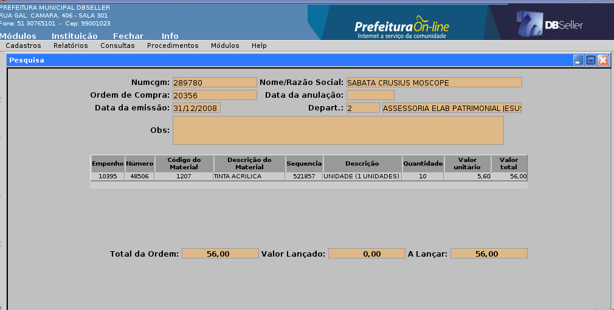

figura 2
Sumário
Subgrupos de Material/Serviço 6
Cadastros de Tipos de Certificados 14
Documentos por Tipo de Certificado 17
Grupos de Materiais/Serviços 19
Subgrupos de Materiais/Serviços 20
Reemissão de solicitação de compras 23
Reemissão do orçamento da solicitação 27
Reemissão de orçamento de processo de compras 28
Emite autorização de empenho 29
Detalhamento de Despesa por Desdobramento 32
Mapa das Propostas do Orçamento 34
Certificado de Fornecedores 35
Importando uma Solicitação de Compras 51
Liberando uma solicitação de compras 57
Criando um Processo de Compras. 59
Orçamento de Processo de Compras 63
Gerar Autorização de Empenho 71
Desativação de materiais em lote 76
Andamento padrão da solicitação 76
MÓDULO COMPRAS
As prefeituras, como entidades públicas, estão obrigadas a seguir procedimentos legais determinados na Constituição, em Leis, Decretos, Portarias etc., estando sujeita à fiscalização e auditoria de diversos órgãos, particularmente o Tribunal de Contas do Estado.
A aquisição de material e/ou serviços é uma atividade de fundamental importância para a administração pública, o que implica, necessariamente, em um planejamento eficiente para sua efetivação.
Os grupos compreendem a agregação de elementos de despesa que apresentam as mesmas características quanto ao objeto de gasto.
Assim, formados os grupos, a cada um deles teremos ligados um ou mais elementos de despesas, que servem para identificar os objetos de gasto, tais como vencimentos e vantagens fixas, juros, diárias, material de consumo, serviços de terceiros, obras e instalações, etc.
Como exemplo, pode-se citar um grupo chamado Gêneros Alimentícios que estará ligado aos elementos de despesa material de consumo e material de distribuição gratuita.
A figura 1 mostra a tela de inclusão de um grupo no sistema :
figura
1
Código do grupo: código que será criado automaticamente pelo sistema no momento a inclusão;
Descrição do grupo: neste campo deve o usuário informar o nome do grupo que está cadastrando;
Ativo: para o grupo ser utilizado no sistema, este campo deve estar selecionado em “sim”.
Elementos: são os elementos de despesas que ficarão vinculados ao grupo que se está cadastrando, devendo o usuário selecioná-los através do checkbox.
Encerra-se o processo ao clicar no botão incluir.
Por fim, é possível alterar os grupos de materiais e serviços cadastrados no sistema acessando cadastros>grupos de material/serviço>alteração.
É vedada sua exclusão caso algum material/serviço que o contenha já tenha sido utilizado em uma solicitação de compras.
O subgrupo identifica o material ou serviço que pertence a família do grupo. No sistema, o subgrupo liga o material/serviço a um grupo.
A figura 2 mostra a tela de inclusão :
figura
2
Código do subgrupo: código que será criado automaticamente pelo sistema no momento a inclusão;
Descrição do subgrupo: neste campo deve o usuário informar o nome do subgrupo que está cadastrando;
Código do grupo: é o código do grupo no qual o subgrupo ficará vinculado;
Ativo: para o subgrupo ser utilizado no sistema, este campo deve estar selecionado em “sim”.
Utilizado: durante o cadastramento do subgrupo é possivel definir em qual cadastro o mesmo irá ser utilizado, selecionando uma das três opções: cadastro de materiais, cadastro de fornecedores ou em ambos os cadastros.
Vejamos um exemplo: Cadastro de um grupo denominado Serviços, o qual estará vinculado aos seguintes elementos de despesas: serviços de consultoria, outros serviços de terceiros pessoa fisica, outros serviços de terceiros pessoa fisica.
A essa grupo vamos vincular um subgrupo chamado Serviço no Setor de Construção Civil.
Encerra-se o processo ao clicar no botão incluir.
Por fim, é possível alterar os subgrupos de materiais e serviços cadastrados no sistema acessando cadastros>subgrupos de materiais/serviços>alteração.
É vedada sua exclusão caso algum material/serviço que o contenha já tenha sido utilizado em uma solicitação de compras.
Os materiais e serviços são uma divisão do subgrupo, conforme a espécie do material ou serviço.
Para se entender a relação entre grupo, subgrupo e material/serviço, deve-se ter em foco que cada grupo esta ligado a um elemento de despesa e, que, todo e qualquer material ou serviço deve necessariamente estar vinculado a um desdobramento, oriundo do elemento de despesa a ele vinculado.
Ao subgrupo cabe fazer a ligação entre o grupo e o material/serviço.
Exemplificando: temos o medicamento AAS que esta ligado a um grupo chamado Medicamentos, cujos elementos de despesa são material de consumo e material de distribuição gratuita.
Logo, o referido medicamento estará vinculado aos desdobramentos relativos a cada um destes elementos. Em nosso exemplo, o administrador orçamentário definiu que os desdobramentos dos elementos material de consumo e material de distribuição gratuita, para este item, seriam o material farmacológico, o material odontológico e material destinado a assistência social.
A tela de inclusão, inicialmente apresentará 3 (três) filtros para pesquisa, quais sejam:
Código do material: número atribuído ao material/serviço pelo sistema;
Descrição do material: nome atribuído ao material/serviço;
Seleção: seleciona o material/serviço ativo, inativo ou todos.
Muito embora seja uma tela de inclusão, esta tem por objetivo facilitar a inclusão de um novo material/serviço, cujas caracteristicas possam ser semelhantes a de um material/serviço já existente.
Assim, pode o usuário informar o código de um material/serviço já cadastrado no sistema ou descrevê-lo no campo apropriado, bem como proceder sua procura na caixa de seleção, informado que o material/serviço que deseja pesquisar se encontra ativo, inativo ou todos, no caso de não ter certeza da situação do mesmo.
Em existindo algum ou alguns materiais ou serviços com a descrição informada, estes aparecerão na tela. O objetivo é facilitar a inclusão de um material ou serviço similar ao já existente, no qual se quer acrescentar ou excluir algum ou alguns desdobramentos.
Será possível, ainda, trocá-lo de grupo e subgrupo, liberá-lo para autorização de empenho, ou mesmo deixá-lo inativo.
Caso o material ou serviço que se quer cadastrar não exista no sistema, deve o usuário observar e preencher os seguintes campos:
Código do material: número atribuído pelo sistema ao material/serviço que se está cadastrando;
Descrição do material: nome do material/serviço que se está cadastrando;
Complemento material: campo destinado a complementar o material/serviço que se está cadastrando;
Liberado para autorização de empenho: define se o material/serviço pode ser liberado para empenho. Para liberá-lo deve a caixa de seleção estar selecionada em “sim”;
Material inativo: para o material/serviço ser considerado ativo no cadastro de materiais, o mesmo deve estar selecionado neste campo como “não”;
Serviço: define se o item cadastrado no sistema será considerado como um serviço. Para isso, deve a caixa de seleção estar selecionada como “sim”;
Código do grupo: define a qual grupo (elemento de despesa) o material/serviço ficará vinculado. Cumpre ressaltar, que ao se definir o código do grupo, automaticamente o sistema abrirá um campo denominado código do subgrupo, no qual será possível definir qual subgrupo se quer cadastrar o material ou serviço;
Lista de desdobramento: disponível ao usuário para que o mesmo escolha os desdobramentos que serão utilizados pelo material/serviço criado. Vale lembrar, que estes desdobramentos serão oriundos do grupo ao qual se vinculou o material/serviço.
Feito isso, deve o usuário confirmar a inclusão do material ou serviço através do botão incluir.
Por fim, é possível alterar o material ou serviço cadastrado no sistema acessando cadastro>materiais/serviços>alteração.
É vedada sua exclusão caso já tenha sido utilizado em uma solicitação de compras.
A unidade nada mais é do que a caracterização da forma como o material deverá ser entregue para a administração pública.
Assim o usuário, no momento de cadastrar uma solicitação de compras, deve indicar a forma de entrega de um determinado material, podendo optar pela entrega em pacote, lata, kilo, fardo, etc..
Esta tela (figura 3) traz os seguintes dados:
Código da unidade: número atribuído pelo sistema a unidade que se está cadastrando;
Descrição da unidade: nome da unidade que se está cadastrando;
Abreviatura da descrição: abreviatura do nome da unidade que se está cadastrando;
Se usa a quantidade da unidade: estando a quantidade da unidade selecionada como “sim”, será possível indicar-se na solicitação de compras, além da unidade, a quantidade desta unidade a ser adquirida.
Como exemplo, se pode citar a unidade Caixa, cuja abreviatura é “cx”. Nesta situação é possível indicar a quantidade desta unidade a ser adquirida, no nosso exemplo, 50 cx;
Aceita casas decimais: estando selecionada como “sim”, o sistema irá permitir a utilização de casas decimais para esta unidade que se está cadastrando.
figura
3
Encerra-se o processo clincando no botão incluir.
Por fim, é possível alterar uma unidade acessando cadastros>cadastro de unidades>alteração.
A exclusão, no entanto, somente será possível se a unidade cadastrada não foi ainda utilizada em uma solicitação de compras.
É o cadastro dos fornecedores de materiais e/ou serviços da administração pública.
Este cadastro contém, além de informações básicas, os dados bancários, o histórico de movimentações registradas pelo usuário, o subgrupo de fornecimento (tipo de produto ou serviço que o fornecedor oferece) e os dados dos representantes legais da empresa cadastrada.
Este cadastro é composto de 5 (cinco) abas, a saber:
Fornecedor:
Contas banco:
Movimento:
Subgrupo:
Representantes legais:
Na aba fornecedor(figura 4) têm-se:
figura 4
Fornecedor: a identificação do fornecedor será feita através do número do cgm. Caso desconheça o número do cgm, poderá o usuário optar pela pesquisa no link fornecedor, sublinhado;
Data lançamento: data que o usuário está cadastrando o fornecedor;
Observação: utilizado normalmente para indicar o objeto social da empresa que se está cadastrando;
Bloqueado: determina se o fornecedor pode ou não fornecer materiais/serviços a administração pública. Assim, se o campo chamado estiver cetado como “não”, significa que a administração poderá solicitar materiais ou serviços a este fornecedor.
Preenchida esta aba deve o usuário confirmar o cadastro através do botão incluir.
Na aba contas banco (figura 5) têm-se:
figura
5
Fornecedor:
Banco:
Agência:
DV da agência:
Conta:
DV da conta:
CNPJ/CPF:
Identificação do cliente:
Conta padrão:
Conferido:
Ao usuário cabe informar os dados bancários do fornecedor, bem como seu CNPJ e a conta padrão que será utilizada para este fornecedor.
Nesta aba pode-se cadastrar quantas contas bancárias possuir o fornecedor, determinando, porém, uma única conta padrão para o mesmo.
A aba movimento(figura 6), serve para a administração pública registrar o histórico dos fornecimentos realizados pelo fornecedor cadastrado. Trata-se de um campo observação, onde o usuário irá registrar o histórico dos fornecimentos realizados.
figura
6
Na aba subgrupo(figura 7), o usuário irá marcar no checkbox os tipos de produtos oferecidos pelo fornecedor a administração pública.
figura
7
Por fim, a aba representantes legais (figura 8), serve para identificar os representantes legais da empresa cadastrada. Para isso, deverá o(s) representante(s) legal da empresa estar devidamente cadastrado no órgão da administração pública, ou seja, possuir um código de cgm.
Esta aba contém:

figura
8
Sequencial do representante legal: número atribuído pelo sistema ao representante legal que se está cadastrando;
CGM do fornecedor: sistema traz o cgm cadastrado na aba fornecedor;
CGM do representante: deve o usuário informar o código do cgm. Caso desconheça o código, poderá optar em pesquisá-lo no link cgm do representante, sublinhado;
Data inicial: representa a data inicial da representação legal;
Data final: representa a data final da representação legal;
Observação: campo utilizado para acrescentar algum detalhe relavante sobre o representante legal que se está cadastrando.
Por fim, poderá o usuário alterar o cadastro realizado acessando cadastros>cadastros de fornecedores>alteração.
É vedada sua exclusão caso já se tenha emitido algum certificado ao fornecedor cadastrado.
Neste cadastro é definida quais certificações irá se exigir de um determinado fornecedor para que ele possa estar habilitado a fornecer materiais ou serviços a administração pública.
A tela de inclusão (figura 9) contém:
figura
9
Código tipo de certificado: número atribuído pelo sistema ao tipo de certificado que se está cadastrando;
Descrição certificado: nome do tipo de certificado que se está cadastrando;
Imprimir subgrupos: neste campo é possível definir se o tipo de certificado que se está cadastrando, conterá os subgrupos de fornecimento dos fornecedores. Para isso, a caixa de seleção deverá estar como “sim”;
Vale lembrar, que o subgrupo de fornecimento é definido no cadastro de fornecedores do sistema;
Parágrafo do certificado: permite que se acrescente um texto no tipo de certificado que se está cadastrando, cujo conteúdo ficará localizado na parte superior do documento a ser gerado;
Parágrafo 2 do certificado: permite que se acrescente um texto no tipo de certificado que se está cadastrando, cujo conteúdo ficará localizado na parte inferior do documento a ser gerado.
Para encerrar, deve o usuário clicar no botão incluir para concluir o processo.
Por fim, poderá o usuário alterar um tipo de certificado acessando o menu cadastro>cadastros de tipos de certificados>alteração.
A exclusão será vedada, caso este tipo de certificado já tenha sido emitido a algum fornecedor.
Aqui o administrador público informa ao sistema os documentos que poderão fazer parte de um tipo de certificado de fornecedor.
Na prática este menu define quais os documentos que o fornecedor deverá apresentar a administração, de forma a ficar habilitado a fornecer materiais ou serviços a mesma.
Exemplo de documentos que podem ser exigidos pela adminstração pública a seus fornecedores: balanço patrimonial, certidão negativa de falência ou concordata, certidão negativa do inss e fgts, certidão negativa de débitos municipais, estaduais, entre outros.
A tela de inclusão de documentos(figura 10) contém:
figura
10
Código documento: criado automaticamente pelo sistema;
Descrição documento: nome do documento que será exigido do fornecedor;
Observação: campo destinado a alguma informação relativa ao documento que se está cadastrando.
Feito isso, confirma-se o processo clicando no botão incluir.
Por fim, poderá o usuário alterar um documento acessando o menu cadastros>cadastro de documentos>alteração.
A exclusão será vedada se o documento que se quer excluir já tenha sido utilizado na emissão de algum certificado de fornecedor.
O cadastro de documentos por tipo de certificado define quais documentos, previamente cadastrados no sistema, irão fazer parte de um determinado certificado de fornecedor.
A tela de inclusão (figura 11) contém:
figura
11
Código tipo de certificado: deverá o usuário informar o código do tipo de certificado que quer incluir os documentos criados no cadastro de documentos. Caso desconheça o código poderá optar em pesquisá-lo, através clicando no link código tipo certificado, sublinhado.
Informado o código, o sistema trará automaticamente todos os documentos previamente cadastrados no sistema.
Neste momento cabe ao usuário marcar no checkbox, localizado a esquerda da tela, quais documentos irão fazer parte do certificado de fornecedor, bem como marcar no checkbox a direita, quais deles terão caráter obrigatório, ou seja, quais documentos deverão ser obrigatoriamente apresentados pelo fornecedor a administração.
Encerra-se o processo ao clicar no botão atualizar.
Como Gerar um Certificado de Fornecedor
Inicialmente deve o usuário cadastrar os fornecedores no menu cadastro de fornecedores.
Feito isso, deve cadastrar o tipo ou tipos de certificados no sistema, acessando cadastro de tipos de certificados.
Após, deverá o usuário definir quais documentos irão fazer parte do certificado, incluindo-os em cadastro de documentos.
Logo a seguir, irá incluir os documentos no certificado ou certificados que deseja gerar. Para isso, deve acessar o menu documentos por tipo de certificado.
Por fim, para gerar o certificado deve o usuário acessar o menu procedimentos> gera certificado>inclusão.
A tela de emissão do certificacado contém 3 (três) filtros:
Fornecedor:
Nome/Razão social:
Data lançamento:
Nesta tela verifica-se ainda a lista dos fornecedores cadastrados no modulo compras, servindo para facilitar a emissão de um certificado ao fornecedor cadastrado ou gerar outro tipo de certificado para o mesmo fornecedor.
Informado o fornecedor, na tela de inclusão conterá:
Fornecedor: sistema traz o código e o nome do fornecedor ;
Solicitante: usuário deve indicar o nome do solicitante do certificado;
Código do tipo de certificado: deve o usuário informar o código do tipo de certificado que quer emitir. Caso desconheça o tipo de certificado, poderá pesquisá-lo clicando no link código tipo de certificado, sublinhado.
Ao informar o tipo de certificado que quer emitir, o sistema trará na tela todos os documentos vinculados ao tipo de certificado escolhido.
Deve o usuário, então, preencher a data de validade de cada um dos documentos listados na tela e que foram entregues pelo fornecedor a administração.
Poderá, ainda, preencher o campo observação com informações relativas a cada um dos documentos apresentados.
Encerra-se o processo ao clicar no botão incluir. Gerando-se, logo a seguir, o certificado de fornecedor.
Vale lembrar que o campo observação somente irá ser impresso se o parâmetro imprimir observação do certificado de cadastral estiver cetado em “sim”.
Para configurar o parâmetro deve o usuário acessar o menu procedimentos>parâmetros.
Por fim, pode o usuário alterar os registros feitos em um certificado acessando o menu procedimentos>gera certificado>alteração.
Lista todos os grupos cadastrados no sistema. Vale lembrar que os grupos compreendem a agregação de elementos de despesa que apresentam as mesmas características quanto ao objeto de gasto.
Na tela (figura 12 ) pode o usuário ordenar a emissão do relatório por:
figura
12
Ordem: alfabética ou númerica (código do cadastro do grupo).
Feito isso, confirma-se a operação clicando-se no botão processar.
O relatório traz as seguinte informações: código e descrição do grupo de materiais e serviços.
Lista todos os subgrupos cadastrados no sistema. Vale lembrar que os subgrupos identificam os materiais ou serviços que pertence a família do grupo.
Na tela ( figura 13 ) pode o usuário ordenar a emissão do relatório por:
figura
13
Ordem: alfabética ou númerica (código do cadastro do subgrupo);
Grupo: define a relação dos subgrupos com grupos ou tipos, através do filtro grupo (geral, grupo e tipo).
ordem grupo geral traz a relação entre subgrupo, grupo e tipo.
ordem grupo grupo traz a relação entre subgrupo e grupo.
ordem grupo tipo traz a relação entre subgrupo e tipo.
Feito isso, confirma-se a operação clicando-se no botão processar.
O relatório traz as seguinte informações: código e descrição do subgrupo. grupo e tipo de materiais e serviços.
Listas as espécies de compras passíveis de serem utilizadas pela administração pública, as quais encontram-se definidas em Lei.
Na tela ( figura 14 )pode o usuário ordenar a emissão do relatório por:
figura
14
Ordem: alfabética ou númerica (código do cadastro do tipo de compra).
Feito isso, confirma-se a operação clicando-se no botão processar.
O relatório traz as seguinte informações: código e descrição do tipo de compra.
Lista todos os materiais ou serviços cadastrados no sistema.
Na tela ( figura 15 ) pode o usuário ordenar a emissão do relatório por:
figura
15
Ordem: alfabética ou númerica (código do cadastro do material/serviço);
Grupo: define a relação do material/serviço com subgrupos ou elemento, através do filtro grupo (geral, subgrupo e elemento).
O filtro geral traz a relação entre material/serviço, subgrupo e desdobramentos de elementos de despesas.
O filtro subgrupo traz a relação entre material/serviço, subgrupo e desdobramentos de elementos de despesas.
O filtro elemento traz a relação entre material/serviço e um determinado elemento de despesa e seus respectivos desdobramentos. Aqui deve o usuário indicar qual desdobramento pretende gerar o relatório.
O relatório trará todos os materiais/serviços ligados ao desdobramento escolhido.
Após realizada a seleção de filtros deve-se confirmar a operação clicando-se no botão processar.
O relatório traz as seguinte informações:
filtro geral: código material, descrição do material, código subgrupo, descrição subgrupo, elemento, descrição do elemento, nome do usuário que cadastrou o item e o complemento da descrição do material, se houver.
filtro subgrupo: código material, descrição do material, código do elemento e descrição do elemento.
filtro elemento: código do material, descrição do material, código do subgrupo e descrição do subgrupo.
Este relatório ( figura 16 ) reemite as solicitações de compras incluídas no sistema.
figura
16
Na tela tem o usário a opção de imprimir uma ou várias solicitações, bastando informar ao sistema o número da solicitação ou números que apontem um intervalo de solicitações de compras.
Relatório que permite a verificação de diversas informações relativas a solicitação de compras.
A tela que se abrirá possui quatro abas, a saber:
Departamentos:
Tipos de compras:
Materiais:
Dotações:
Na aba departamentos (figura 17) têm-se os filtros solicitações, período, departamentos da solicitação, opção de seleção, ordem de seleção, totalização, situação da solicitação e mostrar itens.
filtro solicitações: nele deve-se informar o número da solicitação ou intervalos de solicitações as quais queremos obter informações;
período: seleciona um intervalo de tempo, mensurado por data, retornando todas as solicitações de compras realizadas no período informado;
departamentos da solicitação: seleciona o(s) departamento(s) no qual a solicitação foi realizada, bem como poderá retornar todas as solicitações feitas no departamento indicado;
opção de seleção: serve como parâmetro de informações, ou seja, pode-se optar por trazer todas as informações indicadas no filtro departamentos da solicitação (somente selecionados) ou optar por excluir os departamentos selecionados (menos os selecionados);
ordem de seleção: seleciona a ordem de apresentação do relatório que poderá ser por número da solicitação, data da emissão, por departamento ou ainda por tipo de compra;
totalização por: são as totalizações por exercício. Pode-se obter a totalização por departamento, tipo de compra, material e dotação.
situação da solicitação: permitir filtrar solicitações autorizadas a empenho, não autorizadas a empenho ou ambas;
mostrar itens: filtro que permite mostrar ou não os itens contidos numa ou mais solicitações selecionadas.
figura 17
figura
18
A aba tipos de compras (figura 19) permite selecionar as solicitações pelo tipo de compra indicada na solicitação ou solicitações requeridas. Exemplo de tipos de compras podemos citar licitação inexigível, convite e tomada de preço.
figura
19
A aba materiais (figura 20) permite selecionar um ou mais itens que possam estar contidos numa ou mais solicitações.
 figura
20
figura
20
A aba dotações (figura 21) trará todas as solicitações que contiverem uma ou mais dotações selecionadas neste filtro.
figura
21
figura
22
Permite reemitir o orçamento de uma solicitação de compras.
Na tela deverá informar o número da solicitação de compras que quer seja reemitido o orçamento. Caso desconheça o número da solicitação poderá pesquisá-la clicando no link número da solicitação.
Feito isso, confirma-se a reemissão através do botão gerar relatório.
Na tela terá a opção de imprimir um orçamento em branco, ou seja, sem os dados de fornecedor, bem como imprimir orçamentos dos fornecedores listados.
Para a impressão (figura 23) basta marcar no checkbox o orçamento ou orçamentos que se quer gerar.
figura
23
Permite reemitir o orçamento de um processo de compras.
Na tela deverá informar o número do processo de compras que quer seja reemitido o orçamento. Caso desconheça o número do processo poderá pesquisá-lo clicando no link número do processo de compras.
Feito isso, confirma-se a reemissão através do botão gerar relatório.
Na tela ( figura 24 )terá a opção de imprimir um orçamento em branco, ou seja, sem os dados do fornecedor, bem como imprimir orçamentos dos fornecedores listados.
figura
24
Para a impressão basta marcar no checkbox o orçamento ou orçamentos que se quer gerar.
Neste relatório é possível reemitir autorizações de empenho.
A tela ( figura 25 ) apresenta três filtros, a saber:
Autorizações: pode o usuário informar o número de uma única autorização ou um intervalo de autorizações;
Período: seleciona um intervalo de tempo, mensurado por data, retornando todas as autorizações realizadas no período informado;
Informações adicionais: informado um período, é possível filtrar por autorizações diretas ou aqueles oriundas de um processo de compras.
figura 25
Preenchidas as informações, basta ao usuário clicar no botão consultar para que o relatório seja gerado.
Este relatório possibilita ao usuário verificar a situação geral de uma solicitação de compras.
A tela é constituída de duas abas, quais sejam:
Data/departamentos:
Usuários:
Na aba data/departamentos ( figura 26 ) poderá o usuário informar:
Data da solicitação: por intervalo de datas.
Departamentos da solicitação: poderá o usuário indicar um ou mais departamentos nos quais deseja obter as informações. Caso não indique nenhum departamento o relatório trará todas as solicitações de compras realizadas pela administração.
Opção de seleção: serve para informar ao sistema se o usuário deseja imprimir no relatório somente os departamentos que se encontram selecionados (somente selecionados) ou se deseja todos os departamentos, há exceção daqueles que se encontram selecionados (menos os selecionados).
Ordem de seleção: indica a ordem pela qual as informações serão organizadas no relatório. Aqui tem o usuário as seguintes opções: data de emissão da solicitação de compras, número da solicitação, usuário ou departamento.
Listar itens: pode o usuário escolher se quer, ou não, ver impressos os itens das solicitações de compras.
figura
26
Na aba usuários( figura 27), têm-se:
Código do usuário: indicado ao sistema o código do usuário, no relatório se verá impresso somente as solicitações de compras realizadas por este usuário selecionado.
Opção de seleção: serve para informar ao sistema se o administrador deseja imprimir no relatório somente os usuários que se encontram selecionados (somente selecionados) ou se deseja todos os usuários, há exceção daqueles que se encontram selecionados (menos os selecionados).
figura
27
Este relatório trará as seguintes informações: número da solicitação de compras, data da sua emissão, fornecedor (credor), tipo de compra realizada, departamento solicitante, usuário que cadastrou a solicitação de compras, empenho, número do empenho e o valor total do empenho.
figura
28
Serve para reemitir uma ou mais ordens de compra.
Na tela (figura 29) poderá o usuário informar o número da ordem de compra ou um intervalo de números de ordens de compra que se quer reimprimir.
figura
29
Este relatório está devidamente descrito na documentação relativa ao modulo contabilidade.
Este relatório está devidamente descrito na documentação relativa ao modulo contabilidade.
Emite Certificado de Registro Cadastral dos fornecedores da administração pública.
Na tela ( figura 30) deverá informar o código do certificado. Caso desconheça o código deverá clicar no link cod. certificado, sublinhado para proceder a pesquisa.
Por fim, basta clicar no botão processsar para gerar o relatório.
figura
30
Este relatório contém as seguintes informações: Identificação do fornecedor, o objeto social da empresa, a descrição dos documentos por ele apresentados e sua data de validade e o tipo de produto que o fornecedor oferece a administração.
Este relatório está devidamente descrito na documentação relativa ao modulo contabilidade.
Informa as trocas de fornecedores, se houveram, quando do julgamento de um determinado processo de compras.
Na tela ( figura 31) têm-se os seguintes filtros:
código de orçamento:
número da solicitação:
código do processo de compras:
figura 31
Caso os desconheça o código, basta clicar no link de um dos três filtros para proceder a pesquisa.
Feito isso, basta clicar no botão enviar dados.
No relatório (figura 32) pode-se observar o item na primeira linha, abaixo temos o fornecedor com o menor preço cotado e na linha subsequente o fornecedor substituto, seguido da justificativa da troca na próxima linha.
figura
32
Serve para imprimir todas as propostas dos fornecedores de um determinado processo de compras ( figura 33 ).
figura
33
Na tela deve o usuário informar:
Processo de compras: número do processo de compras que se quer emitir o relatório. Caso os desconheça o número, basta clicar no link processo de compras para proceder a pesquisa.
Imprimir justificativa de troca de fornecedores: para que a justificativa seja impressa no relatório a caixa de seleção deverá estar selecionada em “sim”.
O relatório (figura 34) trará o fornecedor, seguido de números sequenciais que representam cada um dos itens cotados e seus respectivos valores.

figura
34
Cumpre ressaltar que a menor cotação do item sempre virá em negrito, a fim de facilitar a verificação do fornecedor que cotou o menor preço.
O relatório traz ainda o número de cada item seguido da descrição e a menor cotação do mesmo.
Por fim, o relatório apresentará as trocas de fornecedores que porventura ocorram durante o processo de aquisição de materiais/serviços pela administração pública.
Este relatório está devidamente descrito na documentação relativa ao modulo empenho.
Gera a relação de todos os certificados de fornecedores cadastrados no sistema (figura 35).
figura
35
Neste relatório, têm os seguintes filtros:
Ordem: alfabética (nome do fornecedor), numérica (código certificado), data (data decrescente de inclusão do certificado);
Código do Subgrupo: permite escolher o subgrupo o qual os fornecedores estão vinculados no cadastro de fornecedores. Caso desconheça o código do subgrupo, poderá pesquisá-lo, clicando no link código do subgrupo, sublinhado.
Este relatório traz as seguintes informações: código sequencial, cgm, nome, cnpj e telefones do fornecedor. Informa, ainda, o número do certificado do fornecedor, bem como a data que o certificado foi emitido.
Esta consulta permite acompanhar as principais fases do processo de aquisição de materiais/serviços realizados pela administraçãopública. Ver figura 36.
Para ter acesso as informações deve o usuário informar:
figura
36
Numero da solicitação: representa o código da solicitação de compras criado pelo sistema no momento da inclusão de uma solicitação. Caso desconheça o código, pode o usuário pesquisá-lo clicando no link número da solicitação, sublinhado.
Na tela (figura 37 ) temos as seguintes informações:
Dados da solicitação: traz o departamento solicitante, o nome do usuário solicitante, data da requisição, valor aproximado da aquisição, o nome da instituição solicitante, entre outras;
Itens/dotações: traz os dados dos materiais/serviços que estão sendo requisitados, bem como a dotação a ser utilizada para esta aquisição.
figura
37
Orçamentos de solicitações: traz os dados relativos aos orçamentos de solicitações de compras;
Processos de compras: traz os dados relativos ao processo de compras; ver figura 38.
figura
38
Orçamentos de processos: traz os dados relativos aos orçamentos de processo de compras;
Licitação: traz os dados relativos ao processo licitatório, se houver;
Autorizações de empenho: traz o código da autorização de empenho e empenho, se houverem. O usuário poderá obter informações relativas a autorização de empenho e empenho, clincando nos links destes códigos. Ver figura 39.
figura
39
Pesquisar solicitação: link que permite ao usuário consultar uma nova solicitação de compras.
Consulta que permite verificar as ordens de compras geradas no sistema e seus respectivos dados.
Para realizar esta consulta devemos informar ao sistema o código de algum dos 4(quatro) filtros abaixo, ver figura 40:
Código: representa o número da ordem de compra que se quer consultar;
Numcgm: número do cgm do fornecedor para o qual a ordem de compra foi gerada;
Empenho: número do empenho do exercício;
Número: número sequencial de todos os empenhos realizados.

figura
40
Lista os dados do fornecedor cadastrado previamente no cadastro de fornecedores do modulo compras.
A tela (figura 41) de pesquisa possui o seguinte filtro:
figura
41
Fornecedor: deve o usuário informar o código do fornecedor. Caso desconheça o código poderá optar pela pesquisa, clicando no link fornecedor, sublinhado. Vedr figura 42
figura
42
A consulta traz os dados cadastrais do fornecedor, bem como possibilita verificar os certificados já emitidos para o mesmo, através do botão certificados.
Permite consultar um material/serviço incluído no cadastro de materiais/serviços do modulo compras.
A tela de pesquisa possui o seguinte filtro:
Código do material: deve o usuário informar o código do material que quer consultar. Caso desconheça o código poderá optar pela pesquisa, clicando no link código do material, sublinhado.
A consulta traz os dados cadastrais do material/serviço, bem como os desdobramentos aos quais o mesmo encontra-se vinculado.
Esta consulta está devidamente descrito na documentação relativa ao modulo contabilidade. Ver figura 43 , 44 e 45..
figura 43
figura 44
figura
45
Este procedimento permite a cada administração ajustar o processo de compras conforme suas necessidades, ou seja, nele é possível configurar todo o funcionamento do módulo.
Este controle é feito por instituição, ou seja, cada instituição cadastrada no sistema poderá configurar seus parâmetros do modulo compras. Ver figura 46.
figura 46
Vejamos os parâmetros:
Código da Instituição: Informa ao usuário a instituição na qual ele se encontra e determina a separação dos diversos parâmetros desta instituição em relação as demais instituições cadastradas;
Hora padrão: Determina a hora limite para os fornecedores entregarem os orçamentos emitidos pela administração;
Dias de prazo padrão para orçamento: Determina o tempo máximo que os fornecedores terão para a entrega dos orçamentos emitidos pela administração;
Código de tipo de compra: Permite estabelecer um tipo de compra padrão (default) que sempre aparecerá para o usuário, podendo o mesmo, no entanto, escolher outro tipo de compra que se adapte ao caso em concreto. A sequência apresentada pelo sistema é: 1 – Concuro; 2 – Convite; 3 – Tomada de preço; 4 – Concorrência; 5 – Dispensa de Licitação; 6 – Licitação inexigível; 7 – Não aplicável; 8 - Suprimento de fundos; 9 - Por inscrição de dados contábeis; 10 – Pregão;
Código da unidade padrão: Permite caracterizar o material ou serviço a ser adquirido no momento da realização do cadastro de solicitações. Neste parâmetro é possível a adminstração determinar uma característica padrão (default). Ex.: Unidade, pacote, caixa, litro, kilo, lata, etc.
Obrigar justificativa do item: Determina se o usuário, no momento de realizar o cadastro de uma solicitação, deve justificar os motivos para aquisação de determinado material ou serviço; bem como um número mínimo de caracterer a ser digitado para tal justificativa.
Obrigar informação do material: Não permite que o material seja cadastrado em uma solicitação sem que o usuário informe o código do material a ser requerido (este parâmetro não é mais utilizado no sistema);
Gera reserva de dotações automático: Permite ao sistema que reserve automaticamente o valor estimado pelo usuário para aquisição de um material ou serviço, ou seja, reserva o valor estimado no saldo total de uma determinada dotação orçamentária;
Libera sem item cadastrado: Determina se um item (material ou serviço) não cadastrado no sistema pode ser solicitado no cadastro de solicitações (este parâmetro não é mais utilizado no sistema);
Libera total no processo de compras: Permite a adminstração municipal decidir se haverá um departamento responsável pelo controle orçamentário, ou seja, se cada uma das solicitações deverá passar por um órgão responsável por sua liberação ao processo de compras;
Selecionar tipo de solicitação: Determina se o usuário poderá escolher o tipo de compra no momento em que estiver realizando o cadastro de solicitações;
Sugerir fornecedores: Determina se o usuário poderá sugerir fornecedores no momento em que estiver realizando o cadastro de solicitações;
Mínimo de caracteres: Ligado ao parâmetro “Obrigar justificativa do item”, determina o número mínimo de caracterer a ser digitado para justificar a aquisição de um determinado item.
Permitir cadastro de itens sem dotação: Determina se o sistema pode liberar ao usuario a realização de uma solicitação, sem que o item cadastro esteja vinculado a uma dotação orçamentária;
Passa departamento ao escolher dotação: Determina se o sistema irá apresentar de forma padrão (default) o departamento no qual o usuário está logado;
Permitir digitar valor aproximado: Determina se o sistema permitirá ao usuário digitar o valor aproximado de um determinado item, a ser adquirido durante o procedimento de cadastramento de solicitações;
Liberar item sem dotação: Determina se o sistema poderá liberar um item sem dotação, durante o procedimento de liberação de uma solicitação;
Emissão da solicitação: Determina se o reletório gerado no cadastro de solicitações irá apresentar de forma detalhada as informações relativas a dotação orçamentária. Optanto o administrador pela “Dotação/solicitação”, seu relatório especificará a dotação, o projeto/atividade, o elemento, o recurso; optando pela “Solicitação/dotação”, não obterá as informações anterior, sendo apresentado somente a dotação em código reduzido e o número do elemento;
Imprimir com saldo reservado: Permite a impressão de relatório de solicitação, somente se o item ou itens estiverem com saldo total reservado.
Controla andamento da Solicitação: Determina se a adiminstração pública irá controla todo o processo de andamento de uma solicitação de compras pelo sistema. Este controle inicia-se na solicitação de compras e encerra-se no empenho. Ao administrador cabe indicar quais departamentos irão fazer parte da rotina de controle das solicitações de compras. A configuração dos andamentos das solicitações em realizado em procedimentos>andamento padrão da solicitação;
Tipo de Processo para item da solicitação: se o parâmetro denominado controla andamento da solicitação for SIM, o sistema cria internamente um processo de protocolo, mas para isso, é preciso informar no campo deste parâmetro o número do tipo de processo criado no módulo protocolo, que na prática seria um assunto. Normalmente esse assunto (tipo de processo) é criado com o nome de Andamento da Solicitação. Então, esse parâmetro somente será preenchido se houver controle dos andamentos das solicitações de compras pela administração;
Todos os itens liberados para autorização: Utilizado para autorizações de empenho realizadas de forma direta. Se o parâmetro estiver sim, todo e qualquer item cadastrado no sistema poderá ser empenhado. Caso esteja não, somente poderão ser levados a empenho de forma direta aqueles itens que estejam liberados para empenho em seu cadastro. Usualmente este parâmetro está marcado como não, e somente itens como diárias e passagens possuem em seu cadastro a liberação para empenho de forma direta.
Imprimir observação do certificado de registro cadastral: Este campo observação está relacionado com os documentos inseridos num determinado certificado. Assim, ele é utilizado para alguma observação relativa ao documento apresentado. Pode o administrador definir que este campo não deverá aparecer no momento da geração de um determinado certificado. Para isso, deve habilitar o parâmetro como não.
Trazer última dotação cadastrada na solicitação: Permite que a última dotação informada pelo usuário ao sistema retorne quando do cadastro do próximo item de uma determinada solicitação.
Emite e-mail: Parâmetro relacionado a ordem de compra, o qual permite o envio de mail para o fornecedor, quando a emissão da ordem de compra for por empenho (procedimentos>ordem de compra>inclusão por empenho). Este mail é um aviso ao fornecedor de que a ordem de compra se encontra a sua disposição no chamado dbpref.
Modelo orçamento: Parâmetro que permite ao administrador escolher qual modelo de orçamento de processo de compra irá utilizar em sua rotina (modelo 1 ou modelo 2). Este modelos diferenciam-se basicamente pelo tamanho do fonte (maior no modelo 2) e pela presença de informações adicionais que se encontram contidas no modelo 2.
Modelo Ordem de Compra: Parâmetro que permite ao administrador escolher qual modelo de ordem de compra irá utilizar em sua rotina (modelo 1 ou modelo 2). Este modelos diferenciam-se basicamente pelo tamanho do fonte (maior no modelo 2).
Em regra, quase todas as despesas são realizadas através de compras ou contratações de serviços. Essas despesas seguem determinadas formalidades que dependem do tipo de aquisição de materiais ou contratação de serviços, como veremos mais adiante.
A efetivação deste processo a nível de sistema passa, necessariamente, pela formação de um cadastro de itens (materiais/serviços) no modulo compras. Por sua vez, cada um dos ítens deste cadastro deverá esta ligado a um cadastro de grupos e subgrupos que encontram-se ligados diretamente a elementos de despesas orçamentárias.
Assim, o grupo estabelece a familia a que pertence o material/serviço a ser cadastrado. Já o subgrupo identifica o material ou serviço que pertence a familia do grupo, sendo o ítem uma divisão do subgrupo, conforme a espécie do material/serviço.
Os grupos têm por finalidade permitir o vínculo entre o ítem e o elemento de despesa orçamentária, o que se dá através dos desdobramentos destes elementos ligados ao ítem de compra. Ao subgrupo cabe a identificação do material ou serviço.
Vejamos os exemplos de grupos e subgrupos de um cadastro:
GRUPO SUBGRUPO
Gêneros Alimentícios Gêneros Alimentícios Perecíveis
Gêneros Alimentícios Não Perecíveis
Medicamentos Medicamentos Controlados
Medicamentos Diversos
Assim, ao se cadastrar um item deve-se vinculá-lo inicialmente a um grupo, após a um subgrupo, e finalmente ligar o item a desdobramentos de despesas orçamentárias.
A solicitação de compras no sistema serve para controlar todo o processo de aquisição de bens materiais ou contratação de um serviço pela administração pública.
O cadastro de solicitação de compras é a rotina pela qual cada departamento irá incluir suas solicitações de compras. Nela deve o usuário informar o material ou serviço desejado, a quantidade que necessita, bem como as especificações do mesmo. Informará, ainda, a dotação orçamentária que irá custear a aquisição do bem ou serviço.
Neste cadastramento é facultativo ao usuário apontar fornecedores aptos a atender ao pedido de aquisição dos itens contidos na solicitação.
Cumpre salientar que cada material ou serviço, incluído numa solicitação de compras, estará vinculado a uma ou mais dotações orçamentárias, informadas pelo usuário no sistema.
Incluída a dotação, o sistema automaticamente procede a reserva do valor indicado na dotação apontada.
A reserva de saldo da dotação é opcional, sendo configurada nos parâmetros do modulo compras.
O cadastro de solicitação de compras no sistema é composto por três abas, a saber:
Solicitação:
Itens/dotações:
Fornecedores sugeridos:
A aba solicitação (figura 47) contém:
figura 47
Número da solicitação: número atribuído pelo sistema a solicitação de compras;
Data da solicitação: data que se está cadastrando a solicitação;
Resumo da solicitação: local destinado a descrição genérica da compra ou serviço que se está requerendo;
Departamento: departamento no qual o usuário encontra-se logado;
Tipo: permite ao usuário selecionar o tipo de compra a ser realizada através da solicitação que está cadastradno. Esta informação somente ficará disponível ao usuário, caso o o parâmetro denominado selecionar tipo de solicitação esteja marcado como “sim”. Está configuração é realizada em procedimentos>parâmetros>selecionar tipo de solicitação.
Para prosseguir o cadastramento da solicitação deve o usuário clicar no botão incluir, habilitando, com isso, a aba itens/dotações.
Na aba itens/dotações ( figura 48) podemos observar duas divisões na tela, a saber:
Código da material:
Dotação orçamentária:
figura
48
Na primeira parte desta tela deve o usuário informar ao sistema:
Código do material: é o código do material que quer cadastrar. Caso desconheça o código poderá proceder uma pesquisa, clicando no link codigo do material, sublinhado.
Na tela de pesquisa poderá o usuário escolher um dentre os seguintes filtros: código do material, código do elemento, elemento, código do grupo/subgrupo, descrição do material, descrição.
O usual é utilizar o filtro descrição do material, descrevendo ali o material que deseja incluir na solicitação de compras.
Escolhido o material/serviço que se quer cadastrar deve o usuário clicar, inicialmente, no botão “Outras informações”, que permite ao usuário registrar detalhadamente a solicitação, informando o prazo de entrega, as condições de pagamento, o resumo de item, bem como a justificativa para compra.
Vale lembrar que os campos acima não possuem seu preenchimento obrigatório, a exceção da justificativa para compra, que pode ter caráter obrigatório. Esta obrigatoriedade é configurado em procedimentos>parâmetros>obrigar justificativa do item.
Preenchidos estes campos, os mesmos devem ser confirmados através do botão enviar.
Feito isso, deve informar quantidade requerida para o material, bem como o valor unitário aproximado do material ou serviço desejado.
Para confirmar a inclusão do material/serviço deve o usuário clicar no botão “Incluir” da solicitação de compras (somente após este ato é que o sistema irá gravar todas as informações relativas ao material).
Segunda parte da tela itens/dotações:
Dotação orçamentária: indica qual dotação orçamentária irá custear a aquisição de material ou serviço.
Neste procedimento, ao se clicar no item “Dotação orcamentaria” sublinhado, uma nova tela se abrirá, devendo o usuário informar a “secretaria”, o “departamento” e o código reduzido da “dotação” que irá ser utilizada.
Havendo “valor disponível” na dotação deve o usuário clicar no botão incluir para prosseguir o cadastro de solicitação.
Preenchida a “aba” Itens/Dotações é possível gerar um relatório da solicitação requerida, utilizando para isto, o botão gerar relatório na aba solicitação.
Importante salientar que é possível ao usuário incluir em um único material ou serviço várias dotações. Para isso, é só incluir a quantidade total do material que se quer, e distribuir estas quantidades em diferentes dotações.
Por fim, cabe ressaltar que a qualquer momento pode o usuário alterar ou excluir um material/serviço cadastrado em uma inclusão de solicitação.
Para isso, deve entrar na aba itens/dotações, e observar no final da tela a tabela denominada “Itens Cadastrados”. Nela tem-se o campo “Opções” que contém um “A” e um “E”, ambos sublinhados, junto com cada item.
As alterações poderão ser feita apenas no item solicitado.
Com relação ao subelemento, este não poderá ser alterado. Nestes casos, deve-se excluir o material/serviço, e cadastrá-lo novamente.
O mesmo vale para a dotação orçamentária já incluída na solicitação de compras.
É possível, ainda, alterar o cadastro de uma solicitação de compras acessando, para isso, o menu procedimentos>cadastro de solicitações>alteração. Nesta rotina o usuário deve seguir os mesmos passos utilizados na inclusão de solicitação, em relação a alterar e excluir um material/serviço.
Por fim, poderá o usuário optar em excluir uma solicitação de compras. Para isso, deve acessar o menu procedimentos>cadastro de solicitações>exclusão.
Cumpre ressaltar que somente poderão ser alteradas ou excluidas solicitações, que não estiverem fazendo parte de um processo de compras no sistema.
Aba fornecedor sugerido do cadastro de solicitações:
Em um cadastro de solicitação de compras é possível indicar o fornecedor que irá atender a necessidade de aquisição de material/serviço pela administração pública.
Para indicar o fornecedor, deve o usuário indicar na aba fornecedores sugeridos, ver figura 49:

figura
49
Número do cgm do fornecedor: número do cgm do fornecedor. Caso desconheça o código, pode pesquisá-lo clicando no link numero do cgm do fornecedor, sublinhado. Informado o número do cgm, deve o usuário clicar no botão incluir, encerrando desta a inclusão da solicitação desejada.
Cumpre esclarecer que a inclusão de fornecedores não é obrigatória.
No entanto, vale destacar aqueles casos de serviços em que a administração já conhece antecipadamente o fornecedor que irá receber o valor empenhado. Exemplo disso, são as contas de água onde se tem o fornecedor e o valor exato do serviço prestado.
Nestes casos, não é necessário realizar-se todo o procedimento de aquisição de material ou serviço. Basta apenas cadastrar a solicitação de compras, indicar o fornecedor e efetivar a autorização de empenho de imediato, dispensando-se a fase do processo de compras e orçamento de processo de compras.
Este procedimento geralmente é realizado pelo setor/departamento de compras.
O usuário ao invés de descrever o material ou serviço desejado, poderá optar em importar uma determinado solicitação. Para isso, deverá acessar o menu procedimentos>cadastro de solicitações>inclusão.
Na aba solicitação deve o usuário clicar no botão “Importar Solicitação”. Este procedimento remete a uma tela de pesquisa, no qual o usuário deve informar:
Número da solicitação: sistema procede a pesquisa pelo código indicado;
Data da solicitação: sistema traz a lista de todas as solicitações de compras da data indicada.
Além destes filtros, a tela traz uma tabela com todas as solicitações de compras cadastradas no sistema.
Informado o número da solicitação serão importados os itens, as dotações e os fornecedores porventura sugeridos naquela solicitação para a nova solicitação que se está cadastrando.
Através deste procedimento é possível a cada departamento incluir orçamentos das suas solicitações de compra.
Em havendo mais de uma solicitação de compras no departamento no qual o usuário encontra-se logado, o sistema inicialmente trará uma tela de pesquisa contendo os seguintes filtros:
Número da solicitação:
Data da solicitação:
Além destes filtros, o sistema traz uma tabela contendo as solicitações de compras do departamento em que o usuário encontra-se logado.
Escolhida a solicitação, deve o usuário confirmá-la, clicando no botão enviar dados.
A tela de inclusão contém duas abas, a saber:
Orçamento:
Fornecedores:
A aba orçamento (figura 50), é subdivida em 2 (duas) partes.
figura
50
Na primeira subdivisão, têm-se:
Código do orçamento: número sequencial criado pelo sistema;
Prazo limite para entrega do orçamento: sistema traz prazo default, configurado nos parâmetros do modulo (procedimentos>parâmetros>dias de prazo padrão para orçamento);
Hora limite para entrega do orçamento: hora limite default, configurada nos parâmetros do modulo (procedimentos>parâmetros>hora padrão);
Observação: campo destinado a alguma observação relativa ao orçamento que se está gerando (usualmente é usado para fazer alguma observação ao fornecedor que se está enviando o orçamento);
Verificados e preenchidos estes campos, encerra-se a inclusão na primeira subdivisão da tela, clicando-se no botão incluir.
Na segunda subdivisão, tem-se:
Código do Orçamento: número do orçamento criado automaticamente pelo sistema.
Nesta tela encontram-se todos os materiais/serviços contidos na solicitação de compras realizada.
Ao usuário cabe a conferência destes itens, devendo todos estarem devidamente marcados no checkbox para serem incluidos no orçamento que se está cadastrando.
Pode ocorrer que o ordenador de despesas decida não adquirir todos os materiais/serviços contidos em uma solicitação. Neste caso, ao se incluir um orçamento, deve o usuário marcar somente aqueles que serão adquiridos pela administração pública.
Conferido os materiais/serviços basta clicar no botão incluir. para encerrar a segunda parte da tela.
Aba fornecedores:
Local destinado a se incluir os fornecedores do orçamento de solicitaçãdo de compras. Ver figura 51:
figura
51
Para isso, deve informar ao sistema:
Código do orçamento deste fornecedor: número criado automaticamente pelo sistema;
Código do orçamento: código criado automaticamente pelo sistema;
Número cgm: número do cgm do fornecedor.
Para se incluir um fornecedor, deve o usuário informar o número do cgm do mesmo. Caso desconheça, poderá optar em pesquisá-lo, clicando no link Numcgm, sublinhado.
Informado o fornecedor, a confirmação de sua inclusão se dará através do botão incluir. Aqui, o usuário irá incluir tantos quantos fornecedores entender necessário.
Vale lembrar que é possível gerar o relatório de orçamento em branco. Este irá conter o número da solicitação, o código do orçamento e o material ou serviço solicitado.
Para gerá-lo basta o usuário clicar no botão gerar em branco contido na aba fornecedores.
Para gerar relatórios de orçamentos de cada um dos fornecedores incluidos, basta o usuário clicar no botão gerar relatório. O sistema irá gerar tantos orçamentos quantos fornecedores tiverem sido incluidos. No relatório, além das informações relativas ao número da solicitação, o código do orçamento e o material ou serviço solicitado, estarão presentes os dados dos fornecedores dispostos um em cada um dos orçamentos gerados.
Para alterar um orçamento de solicitação deve o usuário acessar o menu procedimentos>orçamento de solicitação>alteração, sendo-lhe facultado alterar todos os campos do orçamento realizado.
Para excluir um orçamento de solicitação deve o usuário acessar o menu procedimentos>orçamento de solicitação>exclusão.
Vale lembrar que para alterar ou excluir um orçamento, os fornecedores não podem ter tido valores lançados neste orçamento. Caso já tenham valores lançados, cabe ao usuário zerar estes valores para poder efetuar a exclusão do orçamento.
Para zerar valores deve o usuário acessar o menu procedimentos>orçamento de solicitação>lançar valores e clicar no botão zerar valores, para cada um dos fornecedores incluidos.
De posse dos orçamentos, pode o usuário de imediato informar ao sistema os valores trazidos pelos fornecedores.
Para isso, deve acessar o menu procedimentos>orçamento de solicitação de compras>lançar valores.
Na tela tem-se:
Código do orçamento: deve usuário informar o código do orçamento que quer lançar valores. Caso desconheça o código poderá optar em pesquisá-lo clicando no link código do orçamento, sublinhado.
Informado o código, o usuário acessará uma tela contendo as seguintes informações:
Código do orçamento: representa o número do orçamento que se quer lançar valores;
Código do orçamento deste fornecedor: representa o número do orçamento criado pelo sistema, para aquele fornecedor que se irá lançar valores;
Validade do orçamento: data informada no orçamento entregue pelo fornecedor, a qual representa a validade de seu orçamento;
Prazo de entrega: data informada no orçamento entregue pelo fornecedor, a qual representa o prazo de entrega do material ou serviço;
Dias de Validade: Validade do orçamento mensurado em dias;
Dias de Prazo: Prazo de entrega mensurado em dias.
Ao preencher estas informações o usuário irá lançar os valores propriamente ditos na tabela lançar valores dos orçamentos, sendo-lhe opcional informar alguma observação relativa ao material/serviço (geralmente marca do produto) que se esta orçando, bem como informar a data validade do material a ser adquirido.
Feito isso, deve informar o valor unitário de cada um dos materiais/serviços, cabendo ao sistema informar o valor total do item e o valor total do pedido.
A confirmação do valores orçados se dá através do botão incluir.
Vale lembrar que o sistema irá apresentar automaticamente cada um dos fornecedores e seus materiais/serviços, para que o usuário possa lançar os valores orçados.
Lançados os valores, o sistema possibilita a alteração dos mesmos através da utilização do botão voltar. Nesta opção se abrirá uma nova tela onde o usuário informará o código do orçamento.
Feito isso, os valores anteriormente lançados para cada item poderão ser alterados.
A opção valores unitários importa (traz) para aquele item específico o valor unitário anteriormente lançado no momento da solicitação de compras.
Utilizando-se a opção zerar valores o campo valor unitário, valor total e total ficarão zerados.
Encerra-se o processo ao incluir os valores unitários de cada um dos itens para todos os fornecedores do orçamento de solicitação de compras.
Lançados todos os valores de todos os itens em cada um dos fornecedores, pode o usuário de imediato realizar o julgamento dos orçamentos, utilizando para isso o botão julgar orçamento.
O julgamento dos orçamentos nada mais é do que a identificação, pelo sistema, do menor valor cotado para cada um dos itens solicitados.
Julgado os orçamentos o sistema trará uma tabela com as seguintes informações:
Código do item: representa o número do item no sistema;
Trocar: campo destinado a troca de fornecedor após julgamento;
Descrição do material: nome do material ou serviço;
Observação: contém a observação digitada no momento de lançar valores;
Descrição do fornecedor: nome do fornecedor;
Quantidade: quantidade do material;
Valor unitário: valor unitário do material ou serviço;
Valor total: valor total do material ou serviço;
Resumo: resumo do item.
Pode ocorrer que o fornecedor que ofereceu o menor preço, por algum motivo, não esteja se enquadrando nos padrões requeridos na compra. Nesta hipótese pode o usuário trocar de fornecedor, clicando no item trocar, existente na tabela.
Ao requerer a troca uma nova tela se abrirá, contendo:
Código sequencial do item no orçamento: código do item;
Fornecedor cotado: fornecedor com a menor cotação no julgamento;
Obs do item: observação do item cotado;
Fornecedor para troca: lista de fornecedor ou fornecedores aptos para troca;
Motivo da troca de pontuação: campo destinado a justificativa da troca (campo obrigatório).
Selecionado o novo fornecedor e motivada a troca, deve o usuário clicar no botão trocar fornecedor, para encerrar o processo de troca.
Este procedimento permite o controle e análise das solicitações de compras pelo departamento responsável pelo controle orçamentário da administração pública. Ver figura 52:
figura
52
A esse departamento cabe a liberação das solicitações de compras, de forma a dar continuidade no processo de aquisição de bens ou serviços.
Esse procedimento é opcional, cabendo ao administrador analisar a necessidade deste controle pela administração pública.
Para que uma determinada solicitação seja liberada, deve o administrador/responsável acessar o menu procedimentos>liberar solicitação.
Na tela (figura 53) deve informar:
Número da solicitação:
Data da solicitação:
figura
53
Informada a solicitação que se quer liberar deve-se marcar os materiais/serviços a serem liberados, e, logo após, confirmar a operação clicando no botão liberar solicitação.
Nesta tela é possível obter informações sobre a dotação que cada um dos materiais/serviços listados encontram-se vinculados. Vale lembrar que materiais/serviços sem dotações não serão liberados.
Observação Importante: Caso a adminstração decida que as solicitações poderão ser feitas mesmo que o material/serviço não esteja cadastrado no sistema (menu procedimentos>parâmetros – obrigar informação do material - habilitado em “Não”), deverá seguir os seguintes passos, quando da liberação do item ou itens solicitados para o processo de compras:
a) Informar o número da solicitação ou a data da solicitação para que o sistema realize a pesquisa da mesma;
b) Após, ir até os itens da solicitação (campo material) clicar sobre a palavra “Sel” sublinhada; uma nova tela se abrirá contendo o código do registro (registro do material ou serviço), um campo elemento contendo todos os elementos de despesa e um campo código do material;
c) No campo elemento, quando não se tiver a informação de qual elemento o material ou serviço solicitado deva ficar vinculado, deve-se selecionar a descrição que melhor se enquadra ao material ou serviço solicitado;
d) Feito isso, deve o administrador proceder o cadastro do material ou serviço, acessando o menu cadastros>materiais/serviços>inclusão. Um campo de pesquisa se abrirá, podendo-se pesquisar algum material ou serviço similar ao que se quer cadastrar. Não existindo, procede-se o cadastramento do mesmo, fechando esta janela.
e) Deve-se descrever o material no campo apropriado, informar o grupo e subgrupo no qual o material ou serviço ficará vinculado, marcando-se, logo em seguida, os itens de desdobramentos. Encerra-se este procedimento ao se clicar no botão incluir;
f) Após, deve-se retornar ao menu procedimentos>liberar solicitação, buscar a solicitação que se esta liberando para o processo de compras, selecionar o material em itens de solicitação e proceder a busca do código do material.
g) Feito isso, deve-se informar o código do material;
h) Confirmar a inclusão no botão incluir;
i) selecionar o item e liberar a solicitação no botão de mesmo nome.
Cumpre ressaltar que o procedimento de liberar solicitações de compras, somente é utilizado por administradores cujas solicitações de compra devam passar por análise de outro departamento, responsável pelo controle orçamentário.
O Setor/departamento de compras é o responsável pela efetiva aquisição e contratação de serviços. Para ele são encaminhadas as solicitações de compras oriundas dos diversos departamentos da administração.
A rotina consiste em selecionar uma ou mais solicitação de compras e os itens que se quer adquirir. Ao confirmar a inclusão neste processo, o sistema cria um processo de compras, codificando-o.
Feito isso, o setor/departamento de compras poderá incluir e julgar as propostas dos fornecedores para o fornecimento dos materiais ou serviços.
Com relação ao julgamento dos orçamentos, cumpre dizer que o sistema automaticamente seleciona o fornecedor que oferecer menor preço para cada ítem. Também será permitido trocar o fornecedor, desde que o usuário digite uma justificativa para sua decisão.
Realizada uma solicitação de compras e posteriormente liberada pelo setor responsável pelo controle orçamentário (se for o caso), esta será encaminhada ao setor/departamento de compras que inicialmente procederá a criação de um processo de compras.
Para incluir uma solicitação no processo de compras deve o usuário acessar o menu procedimentos>processo de compras>inclusão.
Feito isso, a tela ( figura 54) trará:
figura
54
Solicitação: lista todas as solicitações de compras cadastradas no sistema e que ainda não foram incluidas num processo de compras;
Processo de compras: número criado pelo sistema ao processo de compras que se está incluindo;
Data: data de criação da solicitação no sistema;
Departamento: Departamento que criou a solicitação de compras;
Resumo solicitação: resumo oriundo da solicitação de compras;
Tabela itens da solicitação: lista todos os itens da solicitação de compras;
O usuário deve selecionar no campo apropriado o número da solicitação desejada.
Selecionada a solicitação pode-se observar na tela a data em que a mesma foi realizada, o número determinado pelo sistema ao processo de compra, o departamento solicitante, bem como o item ou itens da solicitação.
Neste momento, deve o usuário marcar o item ou itens contidos na solicitação de compras que deseja incluir no processo de compras, confirmando, logo após, no botão “Incluir”.
Incluída a solicitação em um processo de compras, o sistema faculta ao usuário incluir outras solitações a este processo iniciado, independentemente da origem destas solicitações, ou seja, poderá um processo de compras conter solicitações de diferentes departamentos ou setores.
Este procedimento visa dinamizar o processo de compras, evitando que se faça um processo de compras para cada departamento ou setor.
Para se incluir várias solicitações em um único processo, deve o usuário após incluir a primeira solicitação, selecionar uma segunda solicitação e, ao invés de incluí-la, proceder sua juntada, clicando no botão juntar.
Na nova janela que se abrirá, deve-se informar:
Código do processo de compras: processo de compras que desejo juntar a nova solicitação;
Número da solicitação: pesquisa o processo de compras através do número de uma solicitação de compras. Caso itens de uma mesma solicitação estiveram contidos em mais de um processo de compras, o sistema trará uma tabela contendo estes processos de compras.
É possível, ainda, alterar um processo de compras acessando, para isso, o menu procedimentos>processo de compras>alteração. Válido lembrar que, a alteração só será possível caso o processo de compras não tenha autorização de empenho ou empenho, pois se assim for, ao tentar alterar o processo, este não aparecerá para o usuário, caso seja necessário a alteração, todos os passos seguintes ao processo de compras precisam ser desfeitos, obedecendo ordem inversa de execução, ou seja, do último estágio para o primeiro.
A figura 55 apresenta a tela de alteração do processo de compras.
figura
55
Código do processo de compras: Neste campo será informado o numero do processo de compras. Nesta tela bastará informar este campo ou o campo seguinte, não há a necessidade de preencher todos os campos para que se possa proceder a pesquisa do processo de compras. Uma vez informado este campo, os campos de data inicial e final serão desconsiderados, sendo apresentado ao usuaŕio o resultado em função do campo informado. A pesquisa será processada clicando-se no botão “pesquisar”.
Número da solicitação: Neste campo será informado o número da solicitação que consta no processo de compras que se deseja alterar, uma vez informado este campo não há a necessidade de preencher qualquer outro campo desta tela. Sendo informado o0 númeor da solicitação, os campos de data inicial e final serão desconsiderados, sendo apresentado ao usuário o resultado em função do campo informado. A pesquisa será processada clicando-se no botão “pesquisar”.
Data inicial: Clicando no botão “D” deste campo, será informado uma data inicial para definir um período de tempo, o qual será limitado no campo seguinte pela data final estipulada pelo usuário. Esta informação limitará a pesquisa de processos de compras, aos quais não se sabe exatamente o número ou a uma série de processos realizados a dentro do período definido pelo usuário. É válido citar que, ao abrir desta tela, a data ali apresentada será sempre a data do dia atual. estes campos só terão influência na pesquisa se os campos “Código do processo de compras” e ”Número da solicitação” não forem preenchidos.
Data final: Clicando no botão “D” deste campo, será informado uma data final para limitar um período de tempo. Esta informação limitará a pesquisa de processos de compras, aos quais não se sabe exatamente o número ou a uma série de processos realizados a dentro do período definido pelo usuário. É válido citar que, ao abrir desta tela, a data ali apresentada será sempre a data do dia atual. estes campos só terão influência na pesquisa se os campos “Código do processo de compras” e ”Número da solicitação” não forem preenchidos.
Caso haja impecisão nos campos informados, bastará ao usuário clicar no botão ”limpar”, e os dados acima digitados, serão apagados possibilitando a correção de todos os campos.
Clicando-se no botão fechar, a tela de pesquisa será imediatamente encerrada.
Por fim, poderá o usuário optar em excluir um processo de compras. Para isso, deve acessar o menu procedimentos>cadastro de solicitações>exclusão.
Cumpre ressaltar que somente poderão ser alterados ou excluidos, processos de compras que ainda não foram autorizados a empenho, ou que não fazem parte de um processo licitatório.
Através deste procedimento é possível ao setor/departamento de compras incluir os orçamentos dos processos de compras por ele gerados.
Em havendo mais de um processo de compras, o sistema inicialmente trará uma tela de pesquisa contendo os seguintes filtros:
Código do processo de compras:
Número da solicitação:
Além destes filtros, o sistema traz uma tabela contendo todos os processos de compras gerados.
Escolhido o processo de compras, deve o usuário confirmá-lo, clicando no botão enviar dados.
A tela de inclusão ( figura 56) contém duas abas, a saber:
Orçamento:
Fornecedores:
figura 56
A aba orçamento, é subdivida em 2 (duas) partes.
Na primeira subdivisão, têm-se:
Código do orçamento: número sequencial criado pelo sistema;
Prazo limite para entrega do orçamento: sistema traz prazo default, configurado nos parâmetros do modulo (procedimentos>parâmetros>dias de prazo padrão para orçamento);
Hora limite para entrega do orçamento: hora limite default, configurada nos parâmetros do modulo (procedimentos>parâmetros>hora padrão);
Observação: campo destinado a alguma observação relativa ao orçamento que se está gerando (usualmente é usado para fazer alguma observação ao fornecedor que se está enviando o orçamento);
Prazo de entrega de produto: prazo determinado em dias para entrega dos materiais;
Validade do orçamento: determina em dias o prazo de validade do orçamento;
Cotação Prévia: estando em SIM, significa que o orçamento a ser realizado servirá de indicar de valores de cotações para o certame licitatórios. É um dado meramente informativo.
Verificados e preenchidos estes campos, encerra-se a inclusão na primeira subdivisão da tela, clicando-se no botão incluir.
Na segunda subdivisão, tem-se:
Código do Orçamento: número do orçamento criado automaticamente pelo sistema.
Nesta tela encontram-se todos os materiais/serviços contidos no processo de compras.
Ao usuário cabe a conferência destes itens, devendo todos estarem devidamente marcados no checkbox para serem incluidos no orçamento que se está cadastrando.
Pode ocorrer que o ordenador de despesas decida não adquirir todos os materiais/serviços contidos num processo de compras. Neste caso, ao se incluir um orçamento, deve o usuário marcar somente aqueles que serão adquiridos pela administração pública.
Conferido os materiais/serviços basta clicar no botão incluir. para encerrar a segunda parte da tela.
Aba fornecedores:
Local destinado a se incluir os fornecedores do orçamento de solicitaçãdo de compras.
Para isso, deve informar ao sistema. Ver figura 57:
figura 57
Código do orçamento deste fornecedor: número criado automaticamente pelo sistema;
Código do orçamento: código criado automaticamente pelo sistema;
Número cgm: número do cgm do fornecedor.
Para se incluir um fornecedor, deve o usuário informar o número do cgm do mesmo. Caso desconheça, poderá optar em pesquisá-lo, clicando no link Numcgm, sublinhado.
Informado o fornecedor, a confirmação de sua inclusão se dará através do botão incluir. Aqui, o usuário irá incluir tantos quantos fornecedores entender necessário.
Vale lembrar que é possível gerar o relatório de orçamento em branco. Este irá conter o número da solicitação, o código do orçamento e o material ou serviço solicitado.
Para gerá-lo basta o usuário clicar no botão gerar em branco contido na aba fornecedores.
Para gerar relatórios de orçamentos de cada um dos fornecedores incluídos, basta o usuário clicar no botão gerar relatório. O sistema irá gerar tantos orçamentos quantos fornecedores tiverem sido incluídos. No relatório, além das informações relativas ao número da solicitação, o código do orçamento e o material ou serviço solicitado, estarão presentes os dados dos fornecedores dispostos um em cada um dos orçamentos gerados.
Para alterar um orçamento de solicitação deve o usuário acessar o menu procedimentos>orçamento de processo de compras>alteração, sendo-lhe facultado alterar todos os campos do orçamento realizado, caso este não tenha autorização de empenho ou empenho. A figura 58 apresenta esta tela.
figura 58
Código do orçamento: Neste campo será informado o numero do orçamento processo de compras. Nesta tela bastará informar este campo ou o campo seguinte, não há a necessidade de preencher todos os campos para que se possa proceder a pesquisa do processo de compras. Uma vez informado este campo, os campos de data inicial e final serão desconsiderados, sendo apresentado ao usuaŕio o resultado em função do campo informado. A pesquisa será processada clicando-se no botão “pesquisar”.
Número da solicitação: Neste campo será informado o número da solicitação que consta no processo de compras que se deseja alterar, uma vez informado este campo não há a necessidade de preencher qualquer outro campo desta tela. Sendo informado o número da solicitação, os campos de data inicial e final serão desconsiderados, sendo apresentado ao usuário o resultado em função do campo informado. A pesquisa será processada clicando-se no botão “pesquisar”.
Data inicial: Clicando no botão “D” deste campo, será informado uma data inicial para definir um período de tempo, o qual será limitado no campo seguinte pela data final estipulada pelo usuário. Esta informação limitará a pesquisa de Orçamento de processos de compras, aos quais não se sabe exatamente o número ou a uma série de processos realizados a dentro do período definido pelo usuário. É válido citar que, ao abrir desta tela, a data ali apresentada será sempre a data do dia atual. estes campos só terão influência na pesquisa se os campos “Código do processo de compras” e ”Número da solicitação” não forem preenchidos.
Data final: Clicando no botão “D” deste campo, será informado uma data final para limitar um período de tempo. Esta informação limitará a pesquisa de Orçamento de processos de compras, aos quais não se sabe exatamente o número ou a uma série de processos realizados a dentro do período definido pelo usuário. É válido citar que, ao abrir desta tela, a data ali apresentada será sempre a data do dia atual. estes campos só terão influência na pesquisa se os campos “Código do processo de compras” e ”Número da solicitação” não forem preenchidos.
Caso haja impecisão nos campos informados, bastará ao usuário clicar no botão ”limpar”, e os dados acima digitados, serão apagados possibilitando a correção de todos os campos.
Clicando-se no botão fechar, a tela de pesquisa será imediatemente encerrada.
Para excluir um orçamento de solicitação deve o usuário acessar o menu procedimentos>orçamento de processo de compras>exclusão.
Vale lembrar que para alterar ou excluir um orçamento, os fornecedores não podem ter tido valores lançados neste orçamento. Caso já tenham valores lançados, cabe ao usuário zerar estes valores para poder efetuar a exclusão do orçamento.
Para zerar valores lançados deve o usuário acessar o menu procedimentos>orçamento de processo de compras>lançar valores e clicar no botão zerar valores, para cada um dos fornecedores incluídos.
De posse dos orçamentos, pode o usuário de imediato informar ao sistema os valores trazidos pelos fornecedores.
Para isso, deve acessar o menu procedimentos>orçamento de processo de compras>lançar valores.
Na tela tem-se, conforme figura abaixo:
figura 59
Código do orçamento: deve usuário informar o código do orçamento que quer lançar valores. Caso desconheça o código poderá optar em pesquisá-lo clicando no link código do orçamento, sublinhado.
Informado o código, o usuário acessará uma tela contendo as seguintes informações:
Código do orçamento: representa o número do orçamento que se quer lançar valores;
Código do orçamento deste fornecedor: representa o número do orçamento criado pelo sistema, para aquele fornecedor que se irá lançar valores;
Validade do orçamento: data informada no orçamento entregue pelo fornecedor, a qual representa a validade de seu orçamento;
Prazo de entrega: data informada no orçamento entregue pelo fornecedor, a qual representa o prazo de entrega do material ou serviço;
Dias de Validade: Validade do orçamento mensurado em dias;
Dias de Prazo: Prazo de entrega mensurado em dias.
Ao preencher estas informações o usuário irá lançar os valores propriamente ditos na tabela lançar valores dos orçamentos, sendo-lhe opcional informar alguma observação relativa ao material/serviço (geralmente marca do produto) que se esta orçando, bem como informar a data validade do material a ser adquirido.
Feito isso, deve informar o valor unitário de cada um dos materiais/serviços, cabendo ao sistema informar o valor total do item e o valor total do pedido.
A confirmação do valores orçados se dá através do botão incluir.
Vale lembrar que o sistema irá apresentar automaticamente cada um dos fornecedores e seus materiais/serviços, para que o usuário possa lançar os valores orçados.
Lançados os valores, o sistema possibilita a alteração dos mesmos através da utilização do botão voltar. Nesta opção se abrirá uma nova tela onde o usuário informará o código do orçamento.
Feito isso, os valores anteriormente lançados para cada item poderão ser alterados.
A opção valores unitários importa (traz) para aquele item específico o valor unitário anteriormente lançado no momento da solicitação de compras.
Utilizando-se a opção zerar valores o campo valor unitário, valor total e total ficarão zerados.
Encerra-se o processo ao incluir os valores unitários de cada um dos itens para todos os fornecedores do orçamento de solicitação de compras.
Lançados todos os valores de todos os itens em cada um dos fornecedores, pode o usuário de imediato realizar o julgamento dos orçamentos, utilizando para isso o botão julgar orçamento.
O julgamento dos orçamentos nada mais é do que a identificação, pelo sistema, do menor valor cotado para cada um dos itens solicitados.
Julgado os orçamentos o sistema trará uma tabela com as seguintes informações, conforme figura 60:
figura 60
Código do item: representa o número do item no sistema;
Trocar: campo destinado a troca de fornecedor após julgamento;
Descrição do material: nome do material ou serviço;
Observação: contém a observação digitada no momento de lançar valores;
Descrição do fornecedor: nome do fornecedor;
Quantidade: quantidade do material;
Valor unitário: valor unitário do material ou serviço;
Valor total: valor total do material ou serviço;
Resumo: resumo do item.
Processo anterior ao empenho, a autorização de empenho é normalmente realizada pelo Setor/departamento de compras.
A autorização de empenho é a liberação pelo setor/departamento de compras, informando, neste ato, que todas as formalidades para a aquisição de materiais ou serviços foram cumpridas, cabendo ao setor/departamento de contabilidade efetivar o empenho.
Procedimento descrito no manual do módulo empenho.
Procedimento descrito no manual do módulo empenho.
Assim, para gerar uma autorização de empenho oriunda de um processo de compras, deve o usuário informar na tela,. Ver figura 61:
figura 61
Código de processo de compras: número do processo de compras o qual deseja gerar autorização de empenho. Poderá optar em pesquisá-lo, clicando sobre o código de processo de compras sublinhado;
Número da solicitação: utilizado quando há fornecedor sugerido na solicitação de compras. Neste caso, não houve inclusão de processo de compras;
Informado o código, deve o usuário clicar sobre o botão enviar dados.
Na nova tela (figura 62), pode o usuário incluir informações que dizem respeito a(ao):
figura 62
Destino: destino da aquisição ou serviço adquiridos;
Tipo de compra: tipo de compra realizada;
Tipo de licitação: modalidade de licitação, se for o caso;
Número da licitação: número da licitação, se for o caso;
Tipo de empenho: tipo de empenho;
Prazo de entrega: determina o prazo de entrega;
Observações: observações que julgar necessárias;
Condição de pagamento: forma e condição de pagamento, se for o caso;
Outras condições: relacionada a forma e condição de pagamento;
Contato: nome e setor da administração;
Telefone: telefone para contato.
Feito isto, e enviando os dados, uma nova tela se abrirá apresentando, além do código do processo de compras, todas as demais características dos itens ou serviços a serem adquiridos.
O sistema possibilita ao usuário a opção de gerar autorização de empenho para tanto quantos materiais/serviços desejar, devendo, para isso, marcá-los no campo apropriado. Observar figura 63:
figura 63
É possível, ainda, alterar o resumo do item, bastando, para isto, clicar no botão alterar do campo observação.
Escolhido os materiais/serviços deve-se clicar no botão gerar autorização, para que a autorização de empenho se efetive, gerando a guia de autorização de empenho no formato pdf, concluindo o processo.
Autorizações não geradas num processo de compras poderão a qualquer momento serem acessadas para liberação de empenho, devendo o usuário informar ao sistema o código de processo de compras.
Detalhe importante que deve-se destacar, são aqueles casos de serviços em que a administração já conhece antecipadamente o fornecedor que irá receber o valor empenhado.
Exemplo disso, são as contas de água onde se tem o fornecedor e o valor exato do serviço prestado.
Neste caso, não é necessário realizar-se todo o procedimento de aquisição de material ou serviço. Basta apenas realizar a solicitação de compras, indicar o fornecedor e efetivar a autorização de empenho de imediato, dispensando-se a fase do processo de compras e orçamento de processo de compras.
Os valores trazidos no momento da autorização de empenho, neste caso, são aqueles indicados na solicitação de compras.
As autorizações de empenho normalmente são geradas pelo setor/departamento de compras.
Rotina que serve para anular as autorizações de empenho. A figura 64 mostra a tela de anualção de autorização de empenho.
Realizando Empenho
O empenho é o ato pelo qual a administração pública se compromete a pagar pela aquisição de materiais ou serviços realizados. O empenho tem valor de contrato e gera direitos e obrigações as partes contrates (fornecedor e administração pública).
Não iremos aqui detalhar a rotina de realização de um empenho, uma vez que esta encontra-se descrita na documentação relativa ao modulo empenho.
Nesta fase ocorre o encerramento de todas as rotinas e atividades relacionadas a compras e contratação de serviços pela administração pública.
Vale lembrar que o processo iniciou-se com uma solicitação de compras, a qual foi incluída em um processo de compras, que originou um orçamento de processo de compras, que resultou em um julgamento dos diversos orçamentos vinculados ao processo de compras. Neste julgamento foi selecionado um fornecedor ou vários fornecedores, capazes de fornecerem a administração pública os materiais ou serviços requisitados.
Após, foi gerada uma autorização de empenho, seguida do empenho propriamente dito.
O procedimento de gerar uma ordem de compra, tem por finalidade autorizar o fornecedor a proceder a entrega do material ou executar o serviço requerido.
Sua importância consiste, basicamente, em orientar o fornecedor sobre quais materiais devem ser entregues ou qual serviço deverá ser prestado a administração pública.
Essa ordem, além de trazer os dados do fornecedor, informa o local onde o material será entregue, o prazo de entrega e as condições de pagamento.
A ordem de compra traz ainda a relação de todos os itens a serem entregues, especificados de forma detalhada, trazendo, ainda, informações relativas ao empenho, quantidade, valor unitário, valor total.
Por fim, possibilita trazer informações adicionais ao fornecedor, tais como: telefone de contato, endereço, exigências quanto a forma de apresentação das notas fiscais, local de sua entrega, etc.
Para gerar ordem de compra terá o usuário duas opções, quais sejam: inclusão de ordem de compra por empenho e inclusão geral.
Na tela de inclusão terá o usuário três filtros:
Número cgm: informado o cgm do fornecedor, o sistema trará todos os empenhos do fornecedor indicado;
Empenho: sistema trará o empenho informado;
Número: sistema trará o empenho informado.
Em todos os casos, a tela que se abrirá ao usuário trará informações relativas ao fornecedor: número do cgm, cnpj, razão social, endereço, município, telefone e a data da emissão da ordem de compra.
Trará, ainda, o prazo de entrega em dias dos materiais adquiridos, o deposito (almoxarifado) onde os materiais darão entrada e um campo observação. Ao usuário é facultado preencher os campos, prazo de entrega, deposito (almoxarifado) no qual os materiais darão entrada e o campo observação.
Para finalizar o procedimento, deve o usuário marcar no campo indicado (checkbox) quais itens deseja incluir na ordem de compra.
Confirma-se a inclusão de ordem de compra clicando-se no botão incluir.
Para gerar ordem de compra por inclusão geral deve o usuário deve informar ao sistema o número do cgm do fornecedor ou um intervalo de tempo definido por data.
Se o usuário optar por informar o número do cgm, o sistema retornará todos os empenhos realizados em nome do fornecedor indicado, trazendo dados relativos ao número do empenho gerado pelo sistema, o número do empenho, a razão social e a data da emissão do empenho.
Cabe ao usuário informar qual ou quais empenhos deseja gerar ordens de compra. Vale lembrar que cada empenho irá gerar somente uma ordem de compra.
Se o usuário optar por informar um intervalo por data, o sistema trará todos os empenhos emitidos no período indicado.
Nesta tela tem-se informações relativas ao número do empenho gerado pelo sistema, o número do empenho, a razão social e a data da emissão do empenho.
Há igualmente nesta tela um filtro chamado “emitir por”, o qual permitirá o usuário escolher se quer gerar ordens de compra de vários empenhos indiferente do fornecedor (emitir por empenho) ou se quer gerar ordem de compra de empenhos relativos a um determinado fornecedor (emitir por fornecedor).
No primeiro caso (emitir por empenho), basta marcar no checkbox os empenhos que deseja gerar ordens de compras. Feito isso, a tela trará dados relativos a data que esta sendo gerada a ordem de compra, o prazo de entrega, o depósito (almoxarifado) no qual o item ou itens contidos no empenho serão estocados, um campo observação e os dados relativos ao material vinculado ao empenho.
Ao usuário é facultado modificar o prazo de entrega, o depósito destino, bem como preencher o campo observação.
Poderá o usuário alterar uma ordem de compra, devendo para isto acessar o menu procedimentos>ordem de compra>alteração.
Poderá o usuário anular uma ordem de compra, devendo para isto acessar o menu procedimentos>ordem de compra>anulação.
Vale lembrar que somente poderão ser anuladas e alteradas as ordens de compras não incluídas no estoque.
Procedimento que permite desativar materiais em lote. A fugura 65 mostra a desativação de todos os itens denominados caneta.
figura 65
Procedimento que permite indicar os caminhos pelos quais uma solicitação de compras deverá percorrer até ser empenho.
O controle dos andamentos das solicitações está vinculado ao parâmetro denominado “controla andamento da solicitações”. A figura 66 mostra um modelo de configuração de controle de andamentos de solicitações.
figura
66
Ligado ao controle dos andamentos das solicitações, este procedimento deverá ser realizado sempre que uma solicitação de compras for realizada, ou seja, é através dele que se dá o início dos caminhos a serem percorridos por uma solicitação até a mesma ser empenhada.
Este procedimento é utilizado pelos departamentos indicados no andamento padrão para receber e/ou enviar uma determinada solicitação de compras ou processo de compras. Esses trâmites obedecem regras específicas de envio e recebimento.
Procedimento destinado a envio de solicitações/processos de compras de um setor/departamento para outro.
Procedimento destinado a receber solicitações/processos de compras de um setor/departamento diverso do setor/departamento que o usuário encontra-se logado.
NOTA IMPORTANTE: A rotina do controle de andamentos de solicitações por ser peculiar a cada instituição sempre será descrita numa documentação a parte, a ser entregue para a instituição que aderir a este controle.
Procedimento que gera o chamado Certificado de Registro Cadastral, utilizado pela administração pública como documento obrigatório para os certames licitatórios.
Estando o fornecedor devidamente cadastrado no sistema (cadastros>cadastro de fornecedores), bem como definidos os cadastros de tipo de certificados, documentos e os documentos por tipo de certificado, já será possível proceder uma inclusão de certificado no sistema.
Este procedimento inicialmente trará a lista de todos os fornecedores cadastrados no módulo compras. Escolhido o fornecedor, a tela representada na figura 67 será habilitada ao usuário, devendo o mesmo definir o tipo de certificado que deseja incluir (link código tipo certificado).
Observar figura 67:
figura 67
Caberá ao usuário preencher a validade de cada um dos documentos apresentados, bem como descrever, se necessário, alguma observação relativa ao mesmo. Cumpre observar que os campos marcados com asterisco são de preenchimento obrigatorio. Isto equivale dizer, que os documentos descritos nestes campos também são de apresentação obrigatoria por parte do fornecedor.
Confirma-se as informações digitais através do botão incluir. Feito isso, o sistema dará a oportunidade ao usuário de imprimir o certificado. A figura 68 mostra um modelo de certificado de fornecedor:
figura 69
Para alterar o certificado basta informar ao sistema o código do certificado já incluído. Caso desconheça o código poderá optar em pesquisar, clicando no link código do certificado.
Este item de menu permite ao usuário alterar a conta de banco de um fornecedor. Assim, basta o usuário possuir este item de menu liberado em seu login para que ele possa ter acesso a rotina de alteração das contas de bancos dos fornecedores no sistema.
Utilizado por usuários especiais, este procedimento permite incluir, alterar ou excluir itens e dotações de uma solicitação de compras que já esteja em processo de compras, bem como incluir novas solicitações num processo de comprras já existente.
Permite incluir uma ou mais solicitações num processo de compras já existente.
Permite incluir, alterar ou excluir itens e dotações de uma ou mais solicitações incluídas num processo de compras.
Por fim, é possível configurar o pdf da ordem de compra, incluindo no mesmo um texto na sua parte superior, bem como um texto na sua parte inferior.
Permite incluir um texto na parte superior do documento de ordem de compra.
Observar
figura 70:
figura 70
Permite incluir um texto na parte inferior do documento de ordem de compra.
Observe figuras 71 e 72:
figura
71
figura 72
|
DBSeller Serviços de Informática Ltda. – www.dbseller.com.br Rua General Câmara, 406/301 – Porto Alegre (RS) – Fone: (51) 3076-5101 |
Versão 2.1.95 |